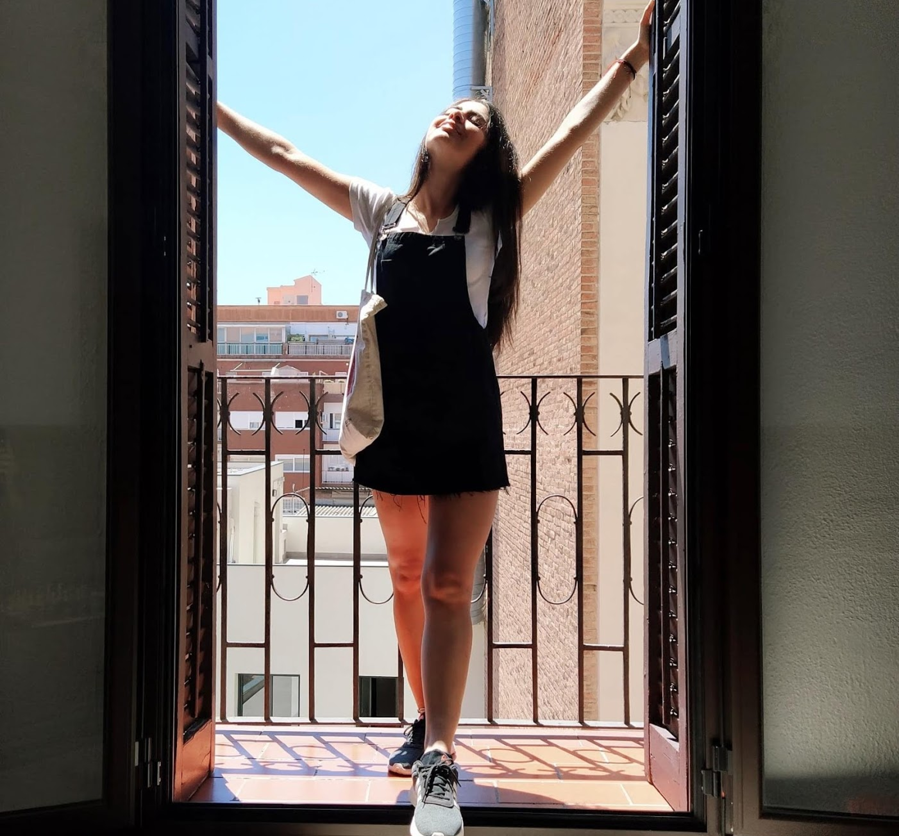

A little about me
I'm an UX/UI Designer with a background in Graphic Design. I combine the visual sensitivity, empathy, and attention to detail that I've learned across my career, with my user experience skills, to achieve great results. I enjoy using my creativity and expertise to develop memorable experiences, and I'm always looking for challenges to improve my skills and my professional environment.
Something more?
✽ I felt in love with the UX/UI world after a UI volunteer program in Athens so that I decided to empower my journey.
✽ When I'm not designing or expanding my knowledge, I enjoy traveling, being immersed in nature, tasting new flavors, visiting museums, and looking for new experiences. I'm also a beginner yogi and a patisserie amateur.
Thing that I've learned
Working with different methodologies, such as Design Thinking, has taught me the value of solid research and the benefits of empathise with our users, understanding the context to find better solutions.
Across my professional journey, I've understood the importance of visual sensibility and curated digital products to achieve effectiveness, always keeping in mind the usability.
Keeping a problem-solving mind as well as a "prototype mind" can help you to optimize the work focusing on iteration and solutions. My different experiences have taught me the importance of movement.